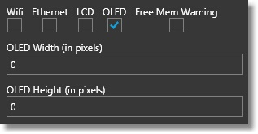
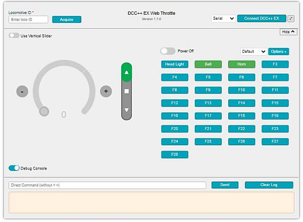

Installer Setup¶
Requirements¶
Windows/Linux/MacOS Computer
DCC-EX Compatible motor shield / motor controller board
DCC-EX Compatible Microcontroller (Arduino Mega/Uno)
USB cable to connect your computer to the Microcontroller Trains
Note
For all versions make sure your USB Cable is conncted from your computer to the Command Station (CS). Make sure no other programs are using the computer's serial port
Windows¶
Download the Windows 32bit or 64bit Installer, depending on your computer
Extract the Installer into its own folder
Open the folder and run the BaseStationInstaller.exe
Mac OS X¶
Install OS X dotnet core
Download Mac OS X Installer
Extract the Installer into its own folder.
Open a terminal window and navigate to that folder
Run the following command:
dotnet BaseStationInstaller
Linux (incl. Raspberry Pi)¶
Install Linux dotnet core
Download Mac OS X Installer
Extract the Installer into its own folder.
Open a terminal window and navigate to that folder
Run the following command:
dotnet BaseStationInstaller
The Installer Window¶

Figure 1 - Installer Window
There will be a lot of information appearing in the log window which can help us debug things if anything goes wrong. The installer needs to connect online to download the latest packages to support your hardware. It will take a few seconds to complete, this is normal. If you have a very slow internet connection it will take longer.
Choose your options¶
In the left side options pane use the dropdown selector boxes choose the following options:

Figure 2 - Options Pane
Select your Command Station Type
Select your Arduino Board Type
Select your Motor Shield
Select your com port (The installer should usually find it for you)
Check the checkbox for your networking method if you have a Network shield or Wifi Shield installed
Check the checkbox for your display type if using an LCD or OLED display
check the Free Mem warning if you need to diagnose memory issues
Press the "Compile and Upload" button
WiFi Checkbox¶
If you have installed a WiFi board, DCC++ EX will scan all the serial ports on your Mega and find it. If you wish to use Access Point Mode (aka AP Mode), there is nothing to do, DO NOT CHECK THIS BOX. AP mode sets up the CS to be its own network router. To use it, you connect your phone or other WiFi device to this network instead of your home network. You will see a new network when you use the connect option on your phone that looks like "DCC-EX-xxxxxx" where the "xxxxxx" are the last 6 characters of the MAC address of your WiFi board. Simply connect to that network and you have a direct connection to your CS.
If you wish to connect to your home network instead (connect to your router using "Station Mode"), then check this box. You will then need to enter your credentials to login to your network just like you would from any of your other WiFi devices:

Figure 3 - Wifi Options
WiFi SSID - The name of your home network
WiFi Password - The password required to connect to your home network
Host Name - If your WiFi Board supports it, this name can be used in addition to the IP address.
Server Port - This is the communication port our internal WiThrottle server uses to communicate with devices like Engine Driver. We recommend leaving it set to 2560 because JMRI also uses that port should you ever want to use JMRI
IP Address - Normally, the DHCP server for your network will assign and IP address and you should leave this blank. But if you want to assign an IP address so the CS always uses the same one, you can enter it here.
Ethernet Checkbox¶
If you have an Ethernet shield and check this box, you will see options to change the following options:

Figure 4 - Ethernet Options
Host Name - If your WiFi Board supports it, this name can be used in addition to the IP address.
Server Port - This is the communication port our internal WiThrottle server uses to communicate with devices like Engine Driver. We recommend leaving it set to 2560 because JMRI also uses that port should you ever want to use JMRI
MAC Address - This is the unique identifier for your Ethernet Shield. We recommend leaving this setting as is. If you ever have more than one Ethernet shield on your network and there is a conflict, you can change this setting.
IP Address - Normally, the DHCP server for your network will assign and IP address and you should leave this blank. But if you want to assign an IP address so the CS always uses the same one, you can enter it here.
LCD Checkbox¶
If you have a 2 or 4 line LCD diplay connected and check this box, you will see the following options you can edit for your display:

Figure 5 - LCD Options
LCD Address (in Decimal format) - This is the address of your display, it us usually 39 (for 0x27) or 63 (for 0x3F)
LCD Columns - The number over vertical columns on your display
LCD Rows - The number of horizontal rows or lines on your display
For more information about using displays, see I2C Displays
OLED CheckBox¶
If you have an OLED display connected and check this box, you will see the following options you can edit for your display:
Figure 6 - OLED Options
OLED Width (in pixels) - Enter the width or number of horizontal pixels on your display
OLED Heigh (in pixels) - Enter the heighr or number of vertical pixels on your display
For more information about using displays, see I2C Displays
Refresh Ports Button¶
This button allows you to refresh the serial ports in case you didn't have the Arduino connected when you opened the program or if you will be programming multiple Arduinos. When you plug in a new board, refresh the ports so it can find your device.
Compile and Upload Button¶
Once you have configured your options, press this button to compile all the source code and upload it to your Command Station.
Test your setup¶
Using the Arduino IDE Serial Monitor¶
To test with the Arduino Serial Monitor, download the Arduino IDE from the following link and install it on your computer.
To do a quick test, open the Arduino application:
Figure 7 - The Arduino IDE
Select "Tools -> Serial Monitor" from the Arduino IDE menu

Figure 8 - Open the Serial Monitor from the Tools Menu
You will see the following screen:

Figure 9 - Serial Monitor
Select "115200" as the baud rate in the dropdown in the lower right
Select "Both NL & CR" from the dropdown next to the baud rate
When you open the serial monitor you will see at least one line sent out as status information. If you have a WiFi board or Ethernet Shield you will see a page full of log information as it configures and connects to your network.
At the top of the serial monitr type <s> (lowercase "s") into the command textbox and press "Send". You should see:
<iDCC-EX V-0.2.1 / MEGA / STANDARD_MOTOR_SHIELD G-9db6d36>
This is the "status" command and reports your version, types of boards you are using and a build number.
There are a lot of other commands you can enter here. As a matter of fact, you could use the serial monitor to test any of the DCC-EX API (application programming interface) commands. Please see the DCC++ EX Wiki for a list of commands.
Using exWebthrottle¶
Figure 10 - exWebThrottle
Click this link: exWebThrottle to run exWebThrottle hosted on our site, or visit GitHub to get the latest version to run on your computer.
Using Engine Driver (or other WiThrottle Cab) - Requires WiFi¶
Figure 11 - Engine Driver
You will need to install Engine Driver on your mobile device and then connect to the CS either directly with AP mode or through your router with Station Mode. You can then use your phone to control your trains.